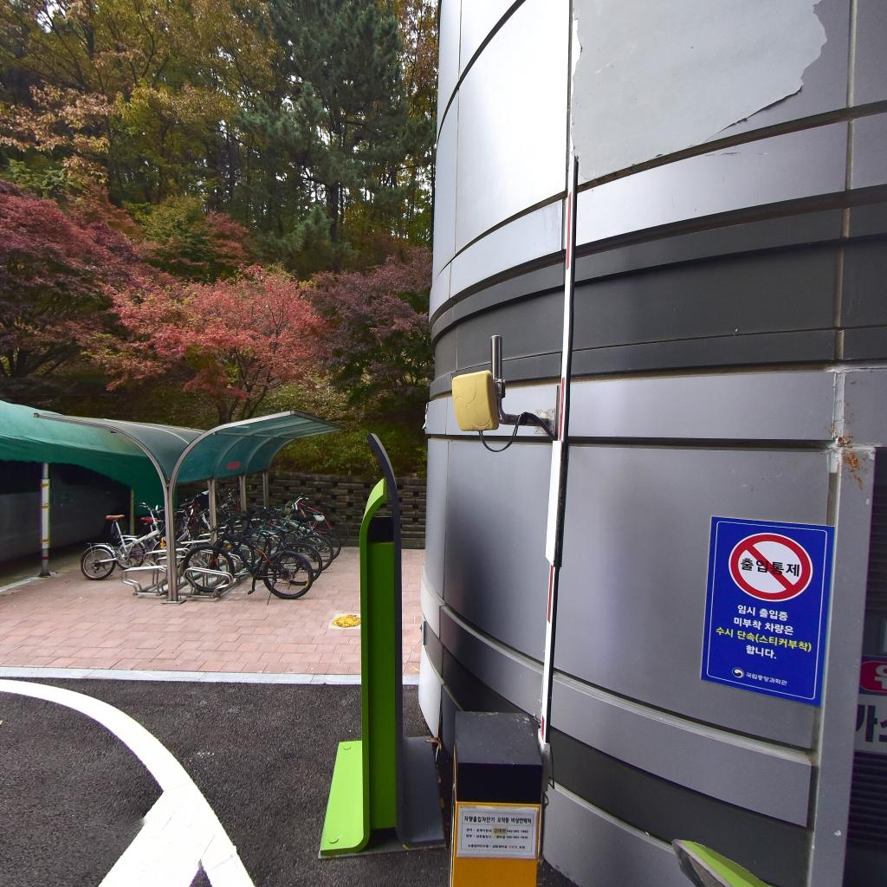
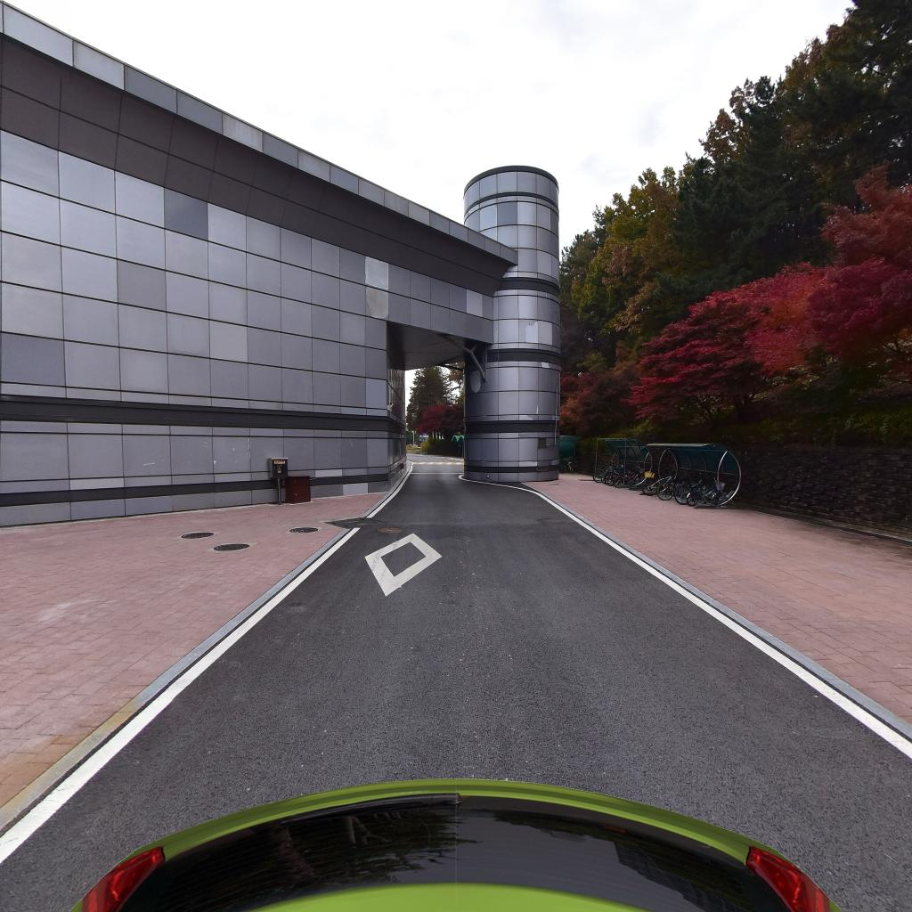

행정동 옆 차량 구역과 보도 비교
아래는 2020년 11월 6일 촬영된 거리 사진이에요. 붉은 보도 남쪽의 차량 통로를 비교하는 자료이며, 버스 출발 05→06번·주차장 출발 03→04번 사이를 확인한 방문객 이동선 사진은 아니에요.
차단기 옆 출입 통제 표지

차량 차단기와 출입 통제 표지를 찾아요. 표지는 직원 차량 출입에 관한 내용이며, 이 사진만으로 방문객이 통과할 수 있는 보행로를 정할 수는 없어요.
기둥 옆에서 좁아지는 붉은 바닥

기둥·경계석·붉은 바닥을 비교해요. 기둥 아래의 검은 포장은 차량 통로이고, 붉은 바닥이 기둥 옆으로 어디까지 이어지는지는 사진에서 더 살펴봐야 해요.